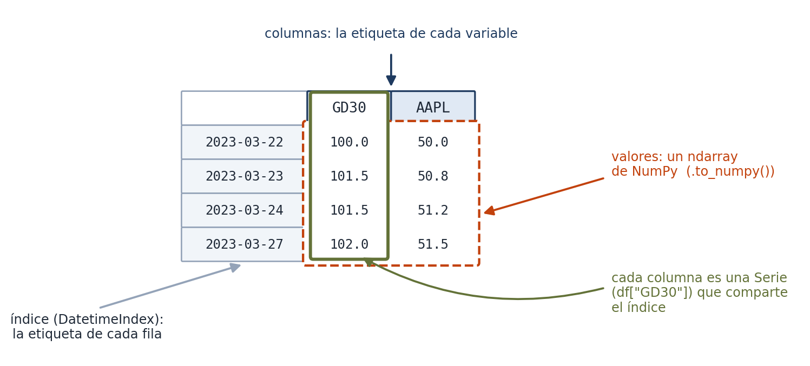
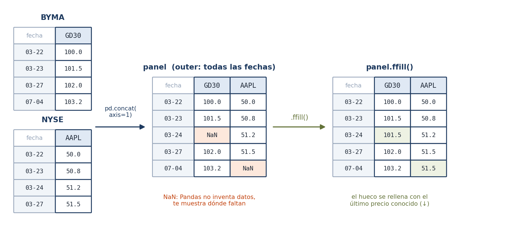
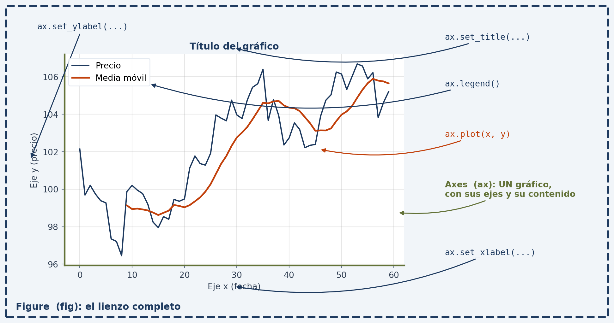
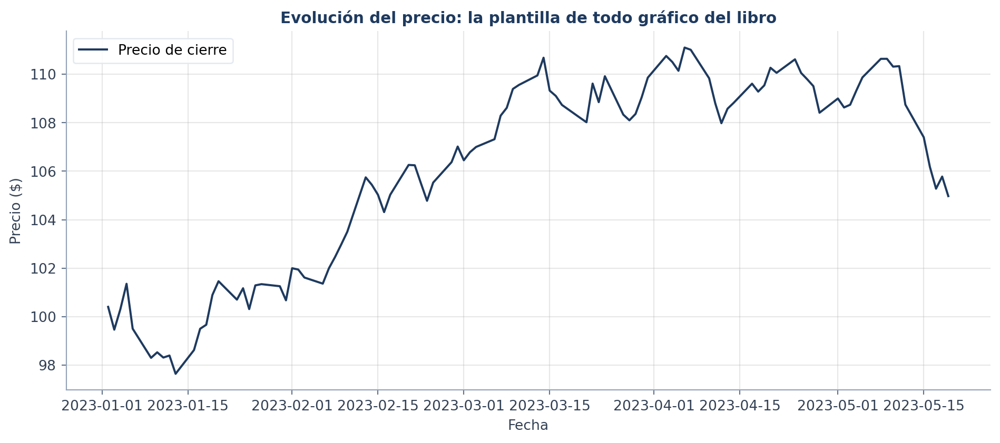
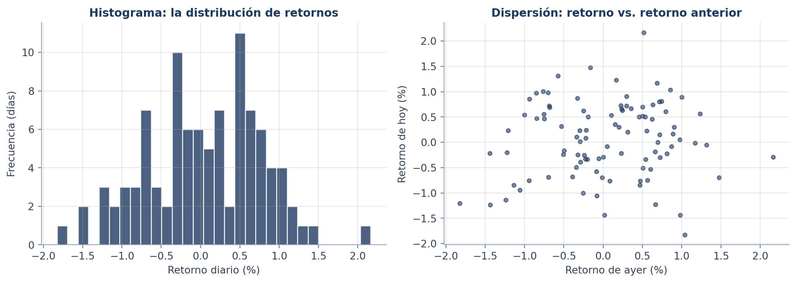
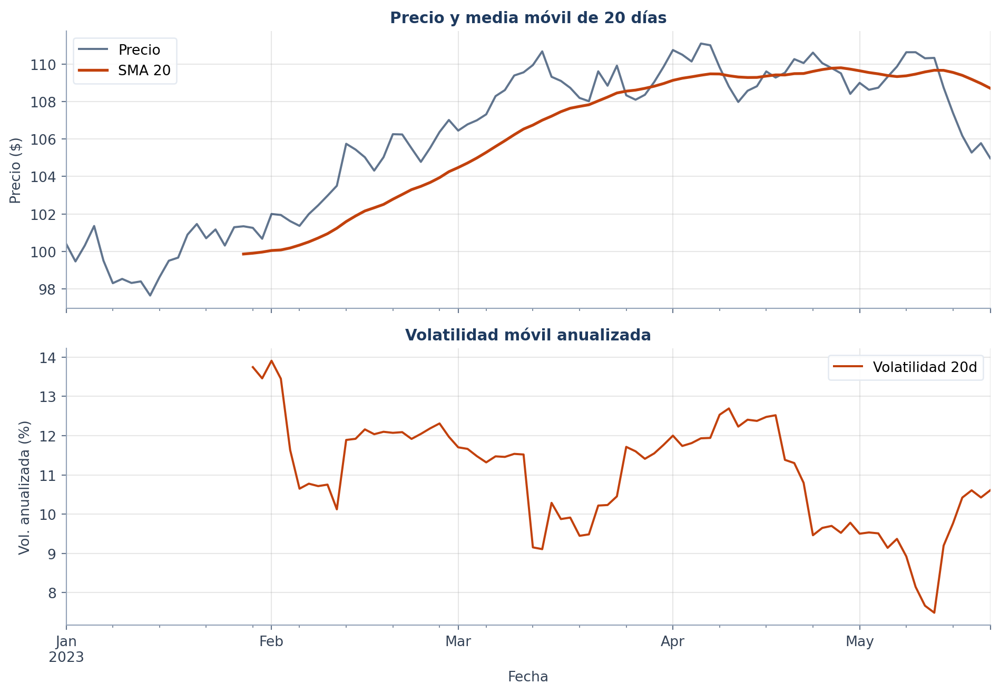
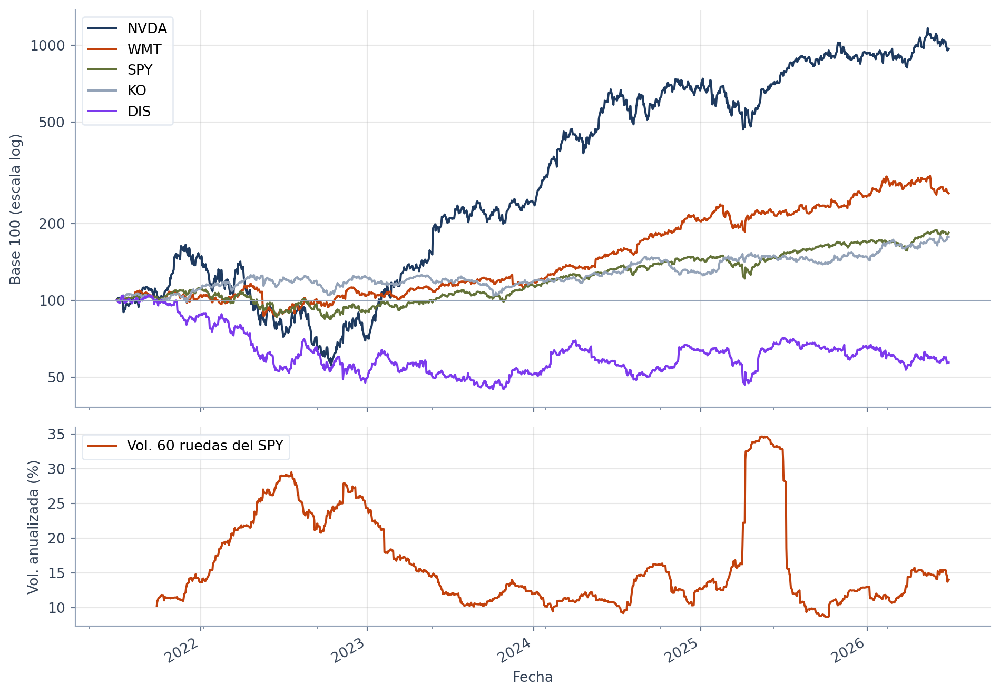
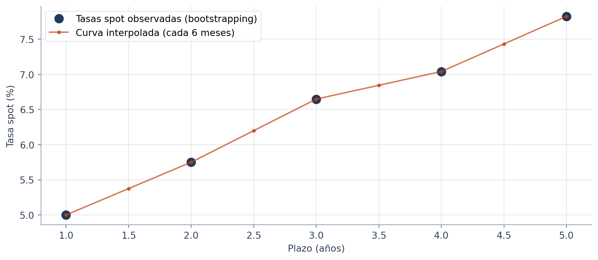
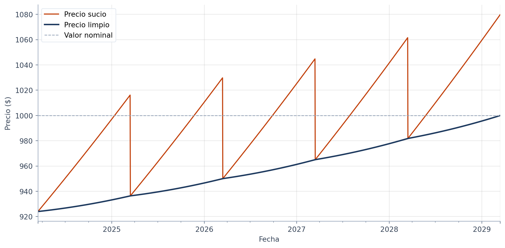
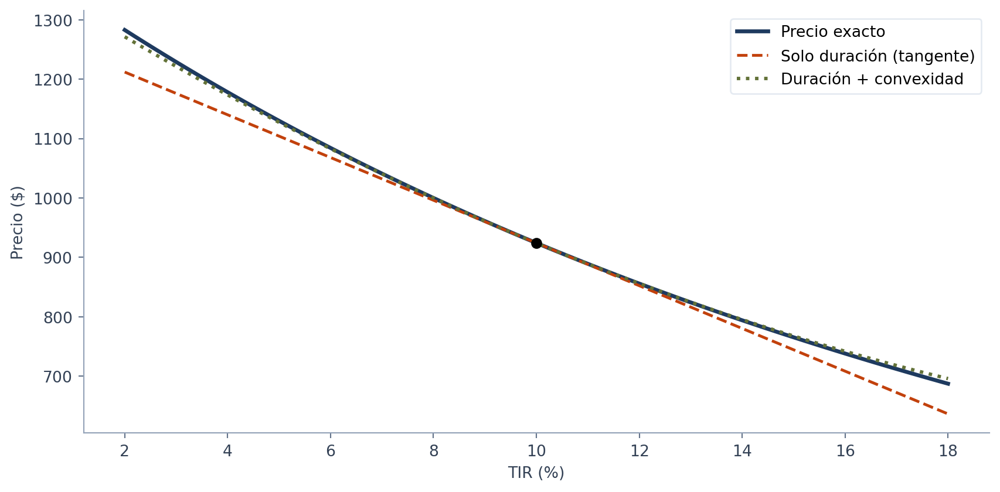

import pandas as pd
import numpy as np
import matplotlib.pyplot as plt6 Capítulo 6: Series de Tiempo y Análisis de Datos con Pandas
Estructuras de Datos, Manipulación y Cálculos Financieros
Resumen
Introducción a pandas como herramienta fundamental para la carga, limpieza y análisis de datos en finanzas. Estudiamos Series y DataFrames, manipulación de series temporales, cálculos vectorizados de retornos, ventanas móviles y visualización técnica. Cerramos con renta fija: la curva de rendimientos por bootstrapping y el riesgo de tasa de un bono (duración y convexidad).
Introducción
En el capítulo anterior descubriste el poder de NumPy, pero también su limitación: los arrays no tienen etiquetas. R[:, 0] es “la columna 0”, y vos tenés que acordarte de que esa columna es el GD30 y de que la fila 40 es el 3 de marzo. Con dos activos se tolera; con doscientos activos y diez años de fechas, es inmanejable.
Pandas (McKinney 2017) resuelve exactamente eso: pone nombres de columnas y un índice (típicamente de fechas) encima de los arrays de NumPy. No es una librería nueva que aprender desde cero: es NumPy con etiquetas. La vectorización, el broadcasting y las máscaras booleanas que ya dominás funcionan igual. Lo que se agrega es la maquinaria para el trabajo diario con datos financieros reales: leer archivos, alinear fechas, rellenar feriados, calcular retornos y ventanas móviles, agrupar por sector.
Este capítulo recorre esa maquinaria y cierra integrando todo en un caso real de renta fija: construir la curva de rendimientos a partir de precios de bonos, y medir cuánto se mueve el precio de un bono cuando las tasas cambian (su duración y su convexidad).
6.1 Las estructuras: Series y DataFrames
Pandas se integra perfectamente con el ecosistema que venimos usando (NumPy y Matplotlib). Sus dos estructuras centrales son la Serie (1D) y el DataFrame (2D).
6.1.1 Series (1D)
Una Serie es un array unidimensional con un índice de etiquetas. Compará con el array de NumPy: ahí el “lunes” era la posición 0 y tenías que recordarlo; acá el dato lleva puesta su etiqueta.
precios_serie = pd.Series([110, 112, 108, 115, 120],
index=["Lunes", "Martes", "Miércoles", "Jueves", "Viernes"],
name="Precios")
print(precios_serie)
print(f"\nMedia: {precios_serie.mean():.2f}")
print(f"Desvío estándar: {precios_serie.std():.2f}")Lunes 110
Martes 112
Miércoles 108
Jueves 115
Viernes 120
Name: Precios, dtype: int64
Media: 113.00
Desvío estándar: 4.69Fijate la salida: cada precio aparece junto a su día, y los métodos estadísticos (mean, std) vienen incorporados y no hace falta importar nada más. Atención con la lectura del desvío (~4.6 sobre una media de 113): mide cuánto se dispersan los niveles de precio alrededor de su promedio, no cuánto se mueve el precio por día. La volatilidad —el riesgo de verdad— se mide sobre los retornos, y la calculamos más adelante en este capítulo.
6.1.2 DataFrames (2D)
Un DataFrame es la estructura tabular (filas y columnas) que vas a usar el 90% del tiempo. Técnicamente, cada columna es una Serie, y todas comparten el mismo índice. Armemos una tabla de bonos soberanos argentinos:
datos = {
"Ticker": ["GD30", "GD35", "GD38", "GD41", "GD46"],
"Precio": [92.5, 85.3, 78.1, 72.4, 65.8],
"Cupón": [0.08, 0.07, 0.065, 0.06, 0.055]
}
df = pd.DataFrame(datos)
print(df) Ticker Precio Cupón
0 GD30 92.5 0.080
1 GD35 85.3 0.070
2 GD38 78.1 0.065
3 GD41 72.4 0.060
4 GD46 65.8 0.055Un diccionario de listas se convierte directamente en tabla: las claves son las columnas. Notá el patrón financiero en los datos: a mayor plazo del bono (GD30 → GD46), menor precio, porque el tiempo descuenta.
La Figura 6.1 separa las piezas de un DataFrame de series de tiempo, el formato que vas a usar en el resto del libro: un índice que etiqueta las filas, nombres que etiquetan las columnas y, en el medio, un array de NumPy.

ndarray de NumPy. Cada columna, por separado, es una Serie que comparte el índice.
6.1.3 Exploración inicial
Regla de oro del análisis de datos: antes de calcular nada, mirá qué tenés. Pandas trae cuatro métodos de inspección que deberían ser tu reflejo automático al cargar cualquier dataset:
print(f"Dimensiones: {df.shape}")
print(f"Columnas: {df.columns.tolist()}\n")
# head(): las primeras filas. ¿Los datos tienen el aspecto esperado?
print(df.head(3))
# describe(): estadísticas rápidas. ¿Hay valores absurdos? ¿escalas raras?
print()
print(df.describe().round(2))Dimensiones: (5, 3)
Columnas: ['Ticker', 'Precio', 'Cupón']
Ticker Precio Cupón
0 GD30 92.5 0.080
1 GD35 85.3 0.070
2 GD38 78.1 0.065
Precio Cupón
count 5.00 5.00
mean 78.82 0.07
std 10.49 0.01
min 65.80 0.06
25% 72.40 0.06
50% 78.10 0.06
75% 85.30 0.07
max 92.50 0.08head() responde “¿cargué lo que creía?” y describe() responde “¿hay algo raro?” (un precio negativo, un máximo ridículo, menos filas que las esperadas delatan problemas de carga). Completan el kit df.tail() (últimas filas, útil para ver si la serie llega hasta la fecha esperada) y df.info() (tipos de datos y memoria, clave para detectar números que se cargaron como texto).
6.2 Lectura, escritura y alineación de datos
6.2.1 Lectura y escritura de archivos
En la práctica, los datos no se tipean a mano: llegan en archivos (CSV, Excel) exportados de un sistema o descargados de un proveedor. Pandas lee y escribe todos los formatos usuales (read_csv, read_excel, to_csv, to_excel). Hagamos el ciclo completo: guardar nuestra tabla de bonos y volver a leerla, que es además la forma de verificar que entendés el formato:
import tempfile, os
# Escribimos el DataFrame a un CSV (separador ; como es usual en la región)
ruta = os.path.join(tempfile.gettempdir(), "bonos.csv")
df.to_csv(ruta, sep=";", index=False)
# Y lo volvemos a leer
df_leido = pd.read_csv(ruta, sep=";")
print(df_leido)
print(f"\n¿La ida y vuelta preservó los datos? {df.equals(df_leido)}") Ticker Precio Cupón
0 GD30 92.5 0.080
1 GD35 85.3 0.070
2 GD38 78.1 0.065
3 GD41 72.4 0.060
4 GD46 65.8 0.055
¿La ida y vuelta preservó los datos? TrueDos parámetros de read_csv que vas a usar constantemente con series de tiempo: parse_dates=["Fecha"] (convierte la columna a fechas de verdad en lugar de texto) e index_col="Fecha" (la establece como índice del DataFrame). Sin parse_dates, las fechas quedan como strings y ningún método temporal funciona: es la causa #1 de “pandas no me ordena por fecha”.
Nota¿Y de dónde saco los datos?
Para descargar datos reales —precios con yfinance, series macro de FRED, o datos institucionales de Bloomberg— el apéndice Apéndice B tiene la guía completa, incluido el patrón profesional: descargar una vez, guardar a CSV, y analizar siempre desde el archivo local con las herramientas de esta sección.
6.2.2 Alineación de índices e integración de datos
Acá viene un problema real que las listas de Python no pueden resolver bien. Supongamos que seguís un bono que cotiza en Buenos Aires y una acción que cotiza en Nueva York. El 24 de marzo es feriado en Argentina (no hay precio local) pero NY opera; el 4 de julio es al revés. Si guardaras los precios en dos listas, los índices dejarían de corresponderse a partir del primer feriado, y cualquier cálculo conjunto (un spread, una correlación) compararía días distintos sin avisarte.
Pandas resuelve esto alineando por etiqueta: al combinar las dos series, empareja las fechas iguales y marca explícitamente los huecos con NaN. Veámoslo:
# BYMA no opera el 24/03 (feriado argentino); NYSE no opera el 04/07
precios_byma = pd.Series(
[100.0, 101.5, 102.0, 103.2],
index=pd.to_datetime(["2023-03-22", "2023-03-23", "2023-03-27", "2023-07-04"]),
name="GD30")
precios_nyse = pd.Series(
[50.0, 50.8, 51.2, 51.5],
index=pd.to_datetime(["2023-03-22", "2023-03-23", "2023-03-24", "2023-03-27"]),
name="AAPL")
# concat alinea automáticamente por fecha (outer: conserva todas las fechas)
panel = pd.concat([precios_byma, precios_nyse], axis=1)
print(panel) GD30 AAPL
2023-03-22 100.0 50.0
2023-03-23 101.5 50.8
2023-03-24 NaN 51.2
2023-03-27 102.0 51.5
2023-07-04 103.2 NaNLeé la tabla resultante: el 24/03 tiene precio de AAPL pero NaN en GD30 (feriado argentino), y el 04/07 al revés. Pandas no inventó datos ni desalineó nada: te mostró exactamente dónde falta información, para que decidas qué hacer (rellenar, eliminar; la sección de Limpieza). Con listas, este problema se resolvía con contabilidad manual de índices; con Pandas, desaparece.
Para combinar datasets, el kit completo:
merge(): unión por columnas (como un JOIN de SQL). El caso típico: pegar la TIR y la paridad de cada ticker.join()/concat(): unión por índice. El caso típico conDatetimeIndex, como recién.- Tipos de unión:
inner(solo claves comunes),outer(todas las claves, con NaN donde falte),left/right.
df_a = pd.DataFrame({"Ticker": ["GD30", "AL30"], "Tir": [0.45, 0.52]})
df_b = pd.DataFrame({"Ticker": ["GD30", "AL30"], "Paridad": [0.35, 0.32]})
df_unido = pd.merge(df_a, df_b, on="Ticker", how="inner")
print(df_unido) Ticker Tir Paridad
0 GD30 0.45 0.35
1 AL30 0.52 0.326.3 Selección y filtrado
6.3.1 Indexación: .loc vs .iloc
.loc: Busca por etiquetas de índice y nombres de columnas..iloc: Busca por posición numérica (0-indexed).
# Seleccionar fila 0 y columna 'Precio' por posición
print(f"Precio GD30 (.iloc): {df.iloc[0, 1]}")
# Seleccionar por etiqueta (si el ticker fuera el índice)
df_idx = df.set_index("Ticker")
print(f"Precio GD30 (.loc):\n{df_idx.loc['GD30', 'Precio']}")Precio GD30 (.iloc): 92.5
Precio GD30 (.loc):
92.56.3.2 Filtrado booleano y máscaras
Permite filtrar filas según condiciones lógicas o pertenencia a listas mediante .isin().
# Bonos con precio mayor a 80
mascara = df["Precio"] > 80
print(df[mascara])
# Filtrar por múltiples valores
tickers_interes = ["GD30", "GD46"]
print(df[df["Ticker"].isin(tickers_interes)]) Ticker Precio Cupón
0 GD30 92.5 0.08
1 GD35 85.3 0.07
Ticker Precio Cupón
0 GD30 92.5 0.080
4 GD46 65.8 0.0556.4 Manejo de fechas y series temporales
Pandas es excepcionalmente potente para trabajar con frecuencias temporales. Primero convertimos datos a tipo fecha con pd.to_datetime() y establecemos un DatetimeIndex.
fechas = ["2023-01-01", "2023-01-02", "2023-01-05"] # 02 es lunes, 01 es domingo
df_time = pd.DataFrame({"Precio": [100, 101, 102.5]}, index=pd.to_datetime(fechas))
print(df_time.index)DatetimeIndex(['2023-01-01', '2023-01-02', '2023-01-05'], dtype='datetime64[ns]', freq=None)6.4.1 Resample: cambio de frecuencia
El método resample() permite agrupar datos por períodos (diario "D", semanal "W", fin de mes "ME") y aplicar funciones de agregación.
# Simulamos una serie diaria de precios (semilla fija para reproducibilidad)
rng = np.random.default_rng(42)
df_diario = pd.DataFrame({
"Precio": 100 + rng.normal(0.1, 1, 100).cumsum()
}, index=pd.date_range("2023-01-01", periods=100, freq="B"))
# Cambiar de diario a mensual tomando el último valor de cada mes
df_mensual = df_diario.resample("ME").last() # "ME" = Month End
print(f"Serie original: {len(df_diario)} observaciones diarias")
print(f"Tras resample: {len(df_mensual)} observaciones mensuales\n")
print(df_mensual.head(3))Serie original: 100 observaciones diarias
Tras resample: 5 observaciones mensuales
Precio
2023-01-31 100.675566
2023-02-28 107.017009
2023-03-31 109.859575De 100 días hábiles quedaron 5 puntas de mes. Elegimos .last() porque para precios lo que importa es el cierre del período; con otras variables la agregación correcta cambia (sum() para volúmenes operados, mean() para tasas). El método de agregación es una decisión económica, no técnica.
6.5 Limpieza y transformación de datos
Los datos financieros reales vienen con “agujeros” (NaN): feriados, activos que no cotizaron, errores del proveedor. Ya vimos cómo la alineación los hace visibles; ahora, qué hacer con ellos. El kit: isna() para detectarlos, dropna() para eliminar las filas afectadas, y fillna() para rellenarlos, en particular con ffill (forward fill: arrastrar el último valor válido).
Trabajemos sobre el panel desalineado de la sección anterior, que tenía exactamente este problema:
print("¿Dónde hay huecos?")
print(panel.isna().sum(), "\n")
# Opción 1: eliminar las filas incompletas (perdemos información)
print("dropna(): quedan", len(panel.dropna()), "filas de", len(panel))
# Opción 2: forward fill, cada hueco toma el último precio conocido
panel_limpio = panel.ffill()
print("\nPanel con ffill():")
print(panel_limpio)¿Dónde hay huecos?
GD30 1
AAPL 1
dtype: int64
dropna(): quedan 3 filas de 5
Panel con ffill():
GD30 AAPL
2023-03-22 100.0 50.0
2023-03-23 101.5 50.8
2023-03-24 101.5 51.2
2023-03-27 102.0 51.5
2023-07-04 103.2 51.5La Figura 6.2 resume el recorrido completo, desde las dos series con calendarios distintos hasta el panel limpio:

pd.concat alinea por fecha y deja NaN donde un mercado no operó; ffill() rellena cada hueco con el último precio conocido de esa columna.
Compará las dos opciones sobre el caso concreto: dropna() tira los días de feriado enteros (perdés también el precio del mercado que sí operó), mientras que ffill() conserva todo, asumiendo que el precio del activo sin cotización “sigue siendo el del último cierre”. Para precios, esa suposición es económicamente razonable; por eso ffill es el default en finanzas, pero no es gratis: el precio arrastrado es viejo, y en un día de crisis puede estar muy lejos del valor real.
TipForward Fill en Finanzas
ffill es ideal para feriados y huecos cortos: asume que el precio vigente es el del último cierre válido. La alternativa bfill (rellenar con el valor siguiente) casi nunca corresponde en finanzas: usa información del futuro, un look-ahead bias disfrazado de limpieza.
6.6 Operaciones vectorizadas y cálculos financieros
Pandas optimiza operaciones sobre columnas enteras sin necesidad de bucles for.
6.6.1 Movimientos y variaciones
.shift(n): Desplaza los datos \(n\) posiciones (útil para comparar \(P_t\) vs \(P_{t-1}\))..pct_change(): Calcula el retorno simple: \((P_t / P_{t-1}) - 1\)..diff(): Calcula la diferencia absoluta: \(P_t - P_{t-1}\).
6.6.2 Tipos de retornos
- Retorno Simple: \(R = (P_t / P_{t-1}) - 1\). Es aditivo entre activos en el mismo momento (el retorno de una cartera es el promedio ponderado de los retornos simples).
- Retorno Logarítmico: \(r = \ln(P_t / P_{t-1})\). Es aditivo a lo largo del tiempo (el retorno de un año es la suma de los diarios) y simétrico.
df_diario["Ret_Simple"] = df_diario["Precio"].pct_change()
df_diario["Ret_Log"] = np.log(df_diario["Precio"] / df_diario["Precio"].shift(1))
print(df_diario[["Precio", "Ret_Simple", "Ret_Log"]].head(4).round(4))
print(f"\nRetorno medio diario: {df_diario['Ret_Simple'].mean():.4%}")
print(f"Volatilidad diaria: {df_diario['Ret_Simple'].std():.4%}") Precio Ret_Simple Ret_Log
2023-01-02 100.4047 NaN NaN
2023-01-03 99.4647 -0.0094 -0.0094
2023-01-04 100.3152 0.0086 0.0085
2023-01-05 101.3557 0.0104 0.0103
Retorno medio diario: 0.0477%
Volatilidad diaria: 0.7393%Dos lecturas de la salida. Primero, la primera fila tiene NaN: el primer día no tiene “día anterior” con quien compararse. Es el mismo desfasaje que manejaste a mano con range(len - 1) en el Capítulo 2, ahora automático. Segundo, el retorno simple y el logarítmico son casi idénticos: para movimientos diarios chicos (±1%) la diferencia es despreciable; se separa en movimientos grandes.
6.6.3 Ventanas móviles (rolling)
Una pregunta constante en finanzas: ¿cómo viene el activo últimamente? No en toda su historia, sino en los últimos 20 días, 60 días. Las ventanas móviles (rolling) calculan una estadística sobre una ventana que se desliza por la serie: la base de las medias móviles y de la volatilidad histórica.
# Media móvil de 20 días: el precio "suavizado"
df_diario["SMA_20"] = df_diario["Precio"].rolling(window=20).mean()
# Volatilidad móvil de 20 días, anualizada con √252
df_diario["Vol_20"] = df_diario["Ret_Simple"].rolling(window=20).std() * np.sqrt(252)
print(df_diario[["Precio", "SMA_20", "Vol_20"]].iloc[18:23].round(3))
print(f"\nVolatilidad anualizada al final de la muestra: {df_diario['Vol_20'].iloc[-1]:.1%}") Precio SMA_20 Vol_20
2023-01-26 101.291 NaN NaN
2023-01-27 101.341 99.860 NaN
2023-01-30 101.256 99.903 0.137
2023-01-31 100.676 99.963 0.135
2023-02-01 101.998 100.047 0.139
Volatilidad anualizada al final de la muestra: 10.6%Mirá las filas impresas: las primeras 19 observaciones de SMA_20 son NaN, porque la ventana de 20 días recién se “llena” en la observación 20. Y la volatilidad final (~15%) es la lectura estándar del riesgo del activo: se anualizó multiplicando por \(\sqrt{252}\), la regla que formalizamos en el Capítulo 7. Cuando en la práctica leas “vol histórica 20 ruedas”, es exactamente esta cuenta.
6.7 Agrupación (groupby)
Sigue el mecanismo Split-Apply-Combine: dividimos el dataset por una categoría (Ticker, Sector), aplicamos una función y combinamos los resultados.
flowchart LR
D["<b>df_panel</b><br/>YPF · Energía · 0.05<br/>PAMP · Energía · 0.03<br/>GGAL · Bancos · −0.01<br/>BMA · Bancos · 0.02"]
D -->|split| E["<b>Energía</b><br/>0.05, 0.03"]
D -->|split| B["<b>Bancos</b><br/>−0.01, 0.02"]
E -->|"apply mean()"| E2["0.040"]
B -->|"apply mean()"| B2["0.005"]
E2 --> C["<b>combine</b><br/>Bancos → 0.005<br/>Energía → 0.040"]
B2 --> C
classDef grupo fill:#e0e9f4,stroke:#1e3a5f
classDef res fill:#eef2e3,stroke:#637238
class E,B grupo
class E2,B2,C res
groupby: el DataFrame se parte por sector, a cada grupo se le aplica la misma función y los resultados se combinan en una tabla nueva, una fila por grupo.
df_panel = pd.DataFrame({
"Sector": ["Energía", "Energía", "Bancos", "Bancos"],
"Ticker": ["YPF", "PAMP", "GGAL", "BMA"],
"Retorno": [0.05, 0.03, -0.01, 0.02]
})
# Agregación por sector
resumen_sector = df_panel.groupby("Sector")["Retorno"].agg(["mean", "std", "count"])
print(resumen_sector) mean std count
Sector
Bancos 0.005 0.021213 2
Energía 0.040 0.014142 26.8 Visualización: cómo graficar (mini-tutorial de Matplotlib)
Llegó el momento de aprender a graficar en serio, porque de acá al final del libro no hay capítulo sin gráficos: fronteras eficientes, distribuciones de retornos, trayectorias simuladas, sonrisas de volatilidad. Un analista que no grafica sus datos está analizando a ciegas: el histograma que revela una cola pesada o el gráfico que delata un hueco en la serie valen más que diez tablas.
6.8.1 La anatomía: Figure y Axes
Matplotlib organiza todo gráfico en dos piezas, y entender la diferencia elimina el 90% de la confusión inicial:
- La Figure (
fig) es el lienzo completo: la hoja donde se dibuja. Controla el tamaño total y contiene uno o más gráficos. - Los Axes (
ax) son cada gráfico individual dentro del lienzo: sus ejes, sus curvas, su título, su leyenda. (El nombre confunde: un objeto Axes es el gráfico, no “los ejes”.)
La Figura 6.4 pone nombre a cada parte de un gráfico y a la llamada que la produce:

ax.
De ahí el idioma que vas a ver en todo el libro, y en todo el código profesional:
fig, ax = plt.subplots(figsize=(10, 5)) # un lienzo con un gráfico adentroplt.subplots() crea las dos piezas juntas, y a partir de ahí todo se le pide al ax: dibujar (ax.plot), etiquetar (ax.set_xlabel), etc. Construyamos un gráfico completo paso a paso, con la receta de cinco pasos que repite cada figura del libro (el resultado es la Figura 6.5):
# 1. Crear lienzo y gráfico
fig, ax = plt.subplots(figsize=(10, 4.5))
# 2. Dibujar los datos
ax.plot(df_diario.index, df_diario["Precio"], linewidth=1.5, label="Precio de cierre")
# 3. Etiquetar TODO: quien mira el gráfico no leyó tu código
ax.set_xlabel("Fecha")
ax.set_ylabel("Precio ($)")
ax.set_title("Evolución del precio: la plantilla de todo gráfico del libro")
# 4. Leyenda y grilla (la grilla suave ayuda a leer valores)
ax.legend()
ax.grid(True, alpha=0.3)
# 5. Ajustar márgenes y mostrar
plt.tight_layout()
plt.show()
Esos cinco pasos —crear, dibujar, etiquetar, leyenda/grilla, mostrar— son la plantilla. Todo lo demás son variaciones: qué se dibuja en el paso 2 y cuántos gráficos conviven en el lienzo.
6.8.2 Los tres tipos de gráfico del libro
Con la plantilla fija, cambiar de tipo de gráfico es cambiar una línea. Los tres que cubren el 95% del análisis financiero:
- Línea (
ax.plot): evolución en el tiempo (precios, curvas, trayectorias). - Histograma (
ax.hist): la distribución de una variable, la herramienta central para mirar retornos. - Dispersión (
ax.scatter): la relación entre dos variables (¿se mueven juntas?)
retornos =df_diario["Ret_Simple"].dropna()
fig, axes = plt.subplots(1, 2, figsize=(11, 4))
# Histograma: ¿cómo se distribuyen los retornos diarios?
ax = axes[0]
ax.hist(retornos * 100, bins=30, edgecolor="white", alpha=0.8)
ax.set_xlabel("Retorno diario (%)")
ax.set_ylabel("Frecuencia (días)")
ax.set_title("Histograma: la distribución de retornos")
ax.grid(True, alpha=0.3)
# Dispersión: ¿el retorno de ayer dice algo sobre el de hoy?
ax = axes[1]
ax.scatter(retornos.shift(1) * 100, retornos * 100, s=15, alpha=0.6)
ax.set_xlabel("Retorno de ayer (%)")
ax.set_ylabel("Retorno de hoy (%)")
ax.set_title("Dispersión: retorno vs. retorno anterior")
ax.grid(True, alpha=0.3)
plt.tight_layout()
plt.show()
Dos novedades en este bloque. Primero, plt.subplots(1, 2) crea dos gráficos en el mismo lienzo (1 fila, 2 columnas) y devuelve un array de Axes; dibujás en cada uno por separado. Segundo, leé lo que los gráficos de la Figura 6.6 dicen: el histograma muestra retornos concentrados alrededor de cero con forma de campana, y la dispersión es una nube sin patrón; el retorno de ayer no predice el de hoy, tu primer vistazo a la eficiencia del mercado que formalizaremos en el Capítulo 16.
6.8.3 El atajo de pandas: .plot()
Pandas trae un envoltorio de matplotlib incorporado: toda Serie y DataFrame tiene un método .plot() que dibuja usando el índice como eje x automáticamente, algo muy cómodo cuando el índice son fechas. Acepta ax= para dirigir el dibujo a un Axes que ya creaste, así que se combina perfecto con la plantilla:
fig, ax = plt.subplots(2, 1, figsize=(10, 7), sharex=True)
# Panel 1: precio y su media móvil (dos series sobre el MISMO ax)
df_diario["Precio"].plot(ax=ax[0], label="Precio", alpha=0.7)
df_diario["SMA_20"].plot(ax=ax[0], label="SMA 20", linewidth=2)
ax[0].set_ylabel("Precio ($)")
ax[0].set_title("Precio y media móvil de 20 días")
ax[0].legend()
ax[0].grid(True, alpha=0.3)
# Panel 2: la volatilidad móvil, compartiendo el eje de fechas (sharex)
(df_diario["Vol_20"] * 100).plot(ax=ax[1], color="#c2410c", label="Volatilidad 20d")
ax[1].set_ylabel("Vol. anualizada (%)")
ax[1].set_xlabel("Fecha")
ax[1].set_title("Volatilidad móvil anualizada")
ax[1].legend()
ax[1].grid(True, alpha=0.3)
plt.tight_layout()
plt.show()
El panel doble de la Figura 6.7 es el formato clásico del análisis técnico: precio arriba, indicador abajo, compartiendo el eje de fechas (sharex=True) para poder leerlos en vertical: fijate cómo los períodos de precio “nervioso” en el panel superior coinciden con los picos de volatilidad en el inferior.
TipEl checklist de todo gráfico
Antes de dar por terminada una figura, cuatro preguntas: ¿los ejes tienen etiqueta con unidades? ¿el título dice qué estoy mirando? ¿hay leyenda si conviven varias series? ¿alguien que no vio el código entiende el gráfico solo? Un gráfico sin etiquetas es un dibujo; con etiquetas, es un argumento.
6.9 Con datos reales: el dataset del libro
Hasta acá trabajamos con una serie simulada de 100 días. Es hora de aplicar todo el capítulo a datos de mercado de verdad: el dataset del libro (datos/precios.csv, ver Apéndice B), con cinco años de precios diarios ajustados de 9 acciones y del ETF SPY (el S&P 500). Es el mismo archivo que van a usar los capítulos siguientes cada vez que veas una sección “Con datos reales”.
El primer paso es el de la sección de I/O: leer con la columna de fechas como índice. Y enseguida, el reflejo de la Exploración Inicial: mirar qué cargamos.
precios = pd.read_csv("../datos/precios.csv", index_col="Date", parse_dates=True)
print(f"Dimensiones: {precios.shape} (ruedas × activos)")
print(f"Desde {precios.index.min():%Y-%m-%d} hasta {precios.index.max():%Y-%m-%d}")
print(f"Tipo del índice: {precios.index.dtype} | Huecos (NaN): {precios.isna().sum().sum()}\n")
print(precios.iloc[:3, :5])Dimensiones: (1253, 10) (ruedas × activos)
Desde 2021-07-01 hasta 2026-06-29
Tipo del índice: datetime64[ns] | Huecos (NaN): 0
AAPL MSFT NVDA JPM XOM
Date
2021-07-01 133.8042 260.6536 20.1423 137.8143 52.6366
2021-07-02 136.4263 266.4598 20.4164 137.6819 52.5617
2021-07-06 138.4342 266.4694 20.6272 135.3699 51.0640Tres chequeos aprobados: el índice es de fechas de verdad (datetime64, gracias a parse_dates), el rango es el esperado y no hay huecos. Con eso, cada herramienta del capítulo se aplica en una línea:
# Retornos diarios: pct_change sobre las 10 columnas a la vez
retornos_d = precios.pct_change().dropna()
# Retorno anual compuesto y volatilidad anualizada de cada activo
resumen = pd.DataFrame({
"Retorno anual": (1 + retornos_d).prod() ** (252 / len(retornos_d)) - 1,
"Vol. anual": retornos_d.std() * np.sqrt(252),
})
print(resumen.sort_values("Vol. anual").round(3))
# resample: de diario a mensual, y el mejor y el peor mes del S&P 500
spy_mensual = precios["SPY"].resample("ME").last().pct_change().dropna()
print(f"\nSPY, mejor mes: {spy_mensual.idxmax():%Y-%m} ({spy_mensual.max():+.1%}), "
f"peor mes: {spy_mensual.idxmin():%Y-%m} ({spy_mensual.min():+.1%})") Retorno anual Vol. anual
KO 0.123 0.162
JNJ 0.125 0.171
SPY 0.131 0.172
WMT 0.215 0.217
JPM 0.191 0.245
XOM 0.211 0.267
MSFT 0.072 0.270
AAPL 0.162 0.277
DIS -0.107 0.294
NVDA 0.579 0.518
SPY, mejor mes: 2026-04 (+10.5%), peor mes: 2022-09 (-9.2%)Leé la tabla de arriba abajo: las acciones defensivas (KO, JNJ) y el propio índice tienen la menor volatilidad, cerca del 17% anual; NVDA es otro planeta, con más del 50%. Y fijate que más volatilidad no garantiza más retorno: MSFT y DIS están en la mitad de arriba de la tabla de riesgo y rindieron menos que el índice (DIS, de hecho, perdió valor en los cinco años). La relación entre riesgo y retorno esperado es el tema del Módulo 2.
La Figura 6.8 junta las dos herramientas de gráfico del capítulo: precios llevados a base 100 (para comparar activos de precios muy distintos en una misma escala) y la volatilidad móvil del índice.
seleccion = ["NVDA", "WMT", "SPY", "KO", "DIS"]
base_100 = precios[seleccion] / precios[seleccion].iloc[0] * 100
vol_spy = retornos_d["SPY"].rolling(60).std() * np.sqrt(252) * 100
fig, ax = plt.subplots(2, 1, figsize=(10, 7), sharex=True,
gridspec_kw={"height_ratios": [2, 1]})
base_100.plot(ax=ax[0], logy=True) # escala log: subas iguales en % se ven iguales
ax[0].axhline(100, color="#94a3b8", linewidth=1)
ax[0].set_ylabel("Base 100 (escala log)")
ax[0].set_yticks([50, 100, 200, 500, 1000], ["50", "100", "200", "500", "1000"])
ax[0].minorticks_off()
ax[0].grid(True, alpha=0.3)
vol_spy.plot(ax=ax[1], color="#c2410c", label="Vol. 60 ruedas del SPY")
ax[1].set_ylabel("Vol. anualizada (%)")
ax[1].set_xlabel("Fecha")
ax[1].legend()
ax[1].grid(True, alpha=0.3)
plt.tight_layout()
plt.show()
Dos detalles de código que vale la pena copiar. La división precios / precios.iloc[0] funciona columna por columna gracias a la alineación por etiquetas: cada activo se divide por su primer precio. Y logy=True usa escala logarítmica, la correcta para precios en el largo plazo: en ella, una suba del 100% mide lo mismo arranque desde 50 o desde 500, así que NVDA no aplasta al resto del gráfico.
6.10 Caso de uso: construcción de la curva de rendimientos
Este caso integra casi todo el capítulo —DataFrames, iteración, operaciones vectorizadas— para resolver un problema central de la renta fija: construir la curva de tasas a partir de precios de bonos que se cotizan en el mercado.
6.10.1 ¿Por qué necesitamos “construir” una curva?
En el mercado no observamos directamente las tasas spot (la tasa de un instrumento que paga todo al vencimiento, sin cupones intermedios). Lo que observamos son precios de bonos con cupón, y cada uno mezcla tasas de muchos plazos a la vez. La técnica del bootstrapping desarma esa mezcla plazo por plazo: usa el bono a 1 año para despejar la tasa a 1 año, y con esa tasa ya conocida despeja la de 2 años del bono a 2 años, y así sucesivamente. Es como armar la curva “tirando del hilo”.
La Figura 6.9 muestra la cadena: cada tasa que se despeja se convierte en un insumo para el paso siguiente.
flowchart LR
B1["Bono 1 año<br/>precio 100.0"] --> Z1(["z₁"])
Z1 -->|"usa z₁"| B2["Bono 2 años<br/>precio 100.5"]
B2 --> Z2(["z₂"])
Z2 -->|"usa z₁, z₂"| B3["Bono 3 años<br/>precio 99.8"]
B3 --> Z3(["z₃"])
Z3 -->|"usa z₁…z₃"| BN["…"]
Z2 -.-> F12["forward f₁,₂"]
Z3 -.-> F23["forward f₂,₃"]
classDef bono fill:#e0e9f4,stroke:#1e3a5f
classDef spot fill:#eef2e3,stroke:#637238
classDef fwd fill:#fde8dc,stroke:#c2410c
class B1,B2,B3,BN bono
class Z1,Z2,Z3 spot
class F12,F23 fwd
Para un bono a \(n\) años con cupón anual \(C\) y valor nominal \(VN\), su precio es la suma de todos los flujos descontados a la tasa spot correspondiente a cada plazo:
\[P = \sum_{t=1}^{n-1} \frac{C}{(1 + z_t)^t} + \frac{C + VN}{(1 + z_n)^n}\]
Si ya conocemos las tasas \(z_1, \dots, z_{n-1}\) (de los pasos anteriores), la única incógnita es \(z_n\), y la despejamos.
bonos_mkt = pd.DataFrame([
{"maturity": 1, "cupon": 0.05, "precio": 100.0},
{"maturity": 2, "cupon": 0.06, "precio": 100.5},
{"maturity": 3, "cupon": 0.065, "precio": 99.8},
{"maturity": 4, "cupon": 0.07, "precio": 100.2},
{"maturity": 5, "cupon": 0.075, "precio": 99.5},
]).set_index("maturity")
tasas_spot = pd.Series(index=bonos_mkt.index, dtype=float)
VN = 100
for n, bono in bonos_mkt.iterrows():
C = VN * bono["cupon"]
P = bono["precio"]
# Valor presente de los cupones anteriores al vencimiento,
# descontados con las tasas spot ya calculadas en pasos previos
vp_cupones = sum(C / (1 + tasas_spot[t]) ** t for t in range(1, int(n)))
# Despejamos la tasa spot del plazo n del flujo final (cupón + nominal)
z_n = ((C + VN) / (P - vp_cupones)) ** (1 / n) - 1
tasas_spot[n] = z_n
print("Curva Spot (tasas cero-cupón):")
print((tasas_spot * 100).round(3).astype(str) + " %")Curva Spot (tasas cero-cupón):
maturity
1 5.0 %
2 5.75 %
3 6.649 %
4 7.042 %
5 7.826 %
dtype: object6.10.2 De la curva spot a las tasas forward
La curva spot responde “¿a qué tasa presto hoy por 3 años?”. Pero muchas veces queremos saber otra cosa: “¿qué tasa está descontando el mercado para el año que va del 2 al 3?”. Esa es la tasa forward implícita, y sale de un argumento de no-arbitraje: invertir 3 años a la spot \(z_3\) debe rendir lo mismo que invertir 2 años a \(z_2\) y luego reinvertir 1 año a la forward \(f_{2,3}\):
\[(1 + z_n)^n = (1 + z_{n-1})^{n-1} \cdot (1 + f_{n-1,n}) \quad\Rightarrow\quad f_{n-1,n} = \frac{(1 + z_n)^n}{(1 + z_{n-1})^{n-1}} - 1\]
# Factor de capitalización acumulado hasta cada plazo: (1 + z_n)^n
factor_acum = (1 + tasas_spot) ** tasas_spot.index
# Forward de un año: cociente de factores acumulados consecutivos
forwards = factor_acum / factor_acum.shift(1) - 1
forwards.iloc[0] = tasas_spot.iloc[0] # el forward del primer tramo es la spot a 1 año
curva = pd.DataFrame({"spot": tasas_spot, "forward_1y": forwards})
print((curva * 100).round(3)) spot forward_1y
maturity
1 5.000 5.000
2 5.750 6.506
3 6.649 8.469
4 7.042 8.228
5 7.826 11.022Cuando las forward están por encima de las spot, el mercado espera que las tasas suban (curva creciente): cada tramo nuevo “empuja” el promedio hacia arriba.
Simulador · Bootstrapping de la curva
Los cinco bonos del capítulo, con sus cupones fijos y el precio como perilla. De los precios salen, en este orden, las tasas spot (puntos azules), las forward de un año (escalones naranjas: cada una vale para su tramo) y, para comparar, la TIR de cada bono (rombos grises). El nominal es 100.
6.10.3 Interpolar la curva para plazos intermedios
Nuestra curva tiene puntos solo en 1, 2, 3, 4 y 5 años, pero en la práctica necesitamos descontar flujos que caen en cualquier fecha (por ejemplo, a 2,5 años). Para eso interpolamos. Pandas trae interpolate(), que rellena los huecos de un índice: reindexamos la curva a una grilla más fina y dejamos que complete linealmente.
La Figura 6.10 compara los cinco puntos que salieron del bootstrapping con la curva interpolada cada seis meses.
# Grilla de plazos cada medio año, de 1 a 5
grilla = np.arange(1.0, 5.5, 0.5)
curva_interpolada = (
tasas_spot
.reindex(tasas_spot.index.union(grilla)) # agregamos los plazos intermedios (quedan NaN)
.interpolate(method="index") # interpolamos usando el valor del índice (el plazo)
.reindex(grilla) # nos quedamos con la grilla fina
)
fig, ax = plt.subplots(figsize=(9, 4))
ax.plot(tasas_spot.index, tasas_spot * 100, "o", markersize=9,
label="Tasas spot observadas (bootstrapping)")
ax.plot(curva_interpolada.index, curva_interpolada * 100, ".-", alpha=0.7,
label="Curva interpolada (cada 6 meses)")
ax.set_xlabel("Plazo (años)")
ax.set_ylabel("Tasa spot (%)")
ax.legend()
ax.grid(True, alpha=0.3)
plt.tight_layout()
plt.show()
AdvertenciaLa interpolación lineal es un punto de partida, no la verdad
Interpolar linealmente es simple y transparente, pero los operadores de renta fija suelen usar métodos más suaves (splines cúbicos, Nelson-Siegel) para que la curva forward no tenga “quiebres” antieconómicos. Para aprender el mecanismo, lo lineal alcanza; para valuar en producción, conviene ir más fino.
6.11 Entre dos cupones: precio sucio, precio limpio y cupón corrido
Hasta acá valuamos los bonos parados en una fecha de pago, con todos los flujos a una distancia entera de años. En el mercado los bonos cambian de manos cualquier día, y entre dos cupones aparece una pregunta que la fórmula no contestaba: ¿a quién le corresponde el cupón que se está devengando?
La convención es que se reparte en proporción al tiempo. Quien vende un bono cuatro meses después del último pago resignó cuatro meses de intereses que va a cobrar el comprador, y el comprador se los reconoce en el precio. Esa porción se llama cupón corrido (o intereses corridos), y da lugar a dos precios para el mismo bono (Fabozzi 2015):
- El precio sucio es lo que efectivamente se paga: el valor presente de todos los flujos que faltan cobrar.
- El precio limpio es el precio sucio menos el cupón corrido.
Con fechas de Pandas el cálculo no requiere nada nuevo. Tomamos el bono de siempre (nominal 1000, cupón anual del 8%, cinco años, TIR del 10%) y le ponemos fecha de emisión.
emision = pd.Timestamp("2024-03-15")
fechas_cupon = pd.date_range(emision, periods=6, freq=pd.DateOffset(years=1))[1:] # 5 pagos anuales
vn_b, tasa_cupon, tir_b = 1000, 0.08, 0.10
montos = np.full(5, vn_b * tasa_cupon)
montos[-1] += vn_b # el último pago incluye el nominal
def precio_sucio(liquidacion):
"""Valor presente de los flujos que faltan cobrar; plazos en años, contando días reales sobre 365."""
faltan = fechas_cupon > liquidacion
plazos = (fechas_cupon[faltan] - liquidacion).days.to_numpy() / 365
return (montos[faltan] / (1 + tir_b) ** plazos).sum()
def cupon_corrido(liquidacion):
"""Parte del próximo cupón devengada desde el último pago."""
anterior = max([emision] + [f for f in fechas_cupon if f <= liquidacion])
proximo = min(f for f in fechas_cupon if f > liquidacion)
return vn_b * tasa_cupon * (liquidacion - anterior).days / (proximo - anterior).days
liquidacion = pd.Timestamp("2024-09-13")
sucio, corrido = precio_sucio(liquidacion), cupon_corrido(liquidacion)
print(f"Días desde la emisión: {(liquidacion - emision).days}")
print(f"Precio sucio: {sucio:8.2f}")
print(f"Cupón corrido: {corrido:8.2f}")
print(f"Precio limpio: {sucio - corrido:8.2f}")Días desde la emisión: 182
Precio sucio: 968.97
Cupón corrido: 39.89
Precio limpio: 929.08A los 182 días de la emisión, el comprador paga 968.97. De ese monto, 39.89 corresponden a la mitad del cupón de 80 que ya se devengó, y el precio limpio es 929.08.
La razón para distinguir los dos precios se ve en la Figura 6.11, que recorre toda la vida del bono con la TIR fija en 10%.
dias_vida = pd.date_range(emision, fechas_cupon[-1] - pd.Timedelta(days=1), freq="D")
serie_sucio = pd.Series([precio_sucio(d) for d in dias_vida], index=dias_vida)
serie_corrido = pd.Series([cupon_corrido(d) for d in dias_vida], index=dias_vida)
fig, ax = plt.subplots(figsize=(10, 5))
serie_sucio.plot(ax=ax, color="#c2410c", linewidth=1.5, label="Precio sucio")
(serie_sucio - serie_corrido).plot(ax=ax, color="#1e3a5f", linewidth=2, label="Precio limpio")
ax.axhline(vn_b, color="#94a3b8", linestyle="--", linewidth=1, label="Valor nominal")
ax.set_xlabel("Fecha")
ax.set_ylabel("Precio ($)")
ax.legend()
ax.grid(True, alpha=0.3)
plt.tight_layout()
plt.show()
El precio sucio tiene forma de serrucho. Sube día a día mientras el cupón se devenga y cae el día del pago: el 14 de marzo de 2025 vale 1016.13 y al día siguiente, ya cobrado el cupón, 936.39. Esa caída de casi 80 no es una mala noticia, porque quien tenía el bono cobró exactamente eso en efectivo. El precio limpio descuenta ese efecto, y sus movimientos reflejan solo lo que le interesa a quien analiza el bono: los cambios en la tasa y el paso del tiempo.
Qué precio se publica depende del mercado. En los mercados internacionales los bonos cotizan a precio limpio y el cupón corrido se suma al liquidar la operación. En el mercado argentino los títulos públicos se negocian habitualmente a precio sucio, y por eso su cotización cae el día en que pagan renta. Antes de comparar dos precios hay que saber de cuál de los dos se trata.
NotaLas convenciones de días
El cupón corrido depende de cómo se cuenten los días, y cada mercado tiene su convención. Las tres más comunes dan resultados distintos para el mismo bono y la misma fecha:
| Convención | Días transcurridos | Base | Cupón corrido |
|---|---|---|---|
| Actual/365 | 182 | 365 | 39.89 |
| 30/360 | 178 | 360 | 39.56 |
| Actual/360 | 182 | 360 | 40.44 |
La convención 30/360 supone que todos los meses tienen 30 días; las otras dos cuentan días de calendario. La diferencia entre la más baja y la más alta es de 0.88 por cada 1000 de nominal, poco para un inversor individual y mucho en una cartera de cientos de millones. El prospecto de cada bono indica cuál se aplica.
La misma elección explica un detalle del código: en la fecha de emisión precio_sucio da 923.99 y no los 924.18 del Capítulo 2, porque uno de los cinco años es bisiesto y, contando días reales sobre 365, los dos últimos flujos quedan un día más lejos.
6.12 Riesgo de tasa: duración y convexidad
La curva dice a qué tasa descontar. La pregunta que sigue, la que se hace cualquiera que tenga bonos en cartera, es la inversa: si las tasas se mueven, ¿cuánto pierdo? En el Capítulo 2 viste que precio y tasa van en sentido contrario, y en el simulador de ese capítulo, que la relación no es una recta sino una curva. Esta sección le pone número a esa curva con las dos medidas que usa cualquier mesa de renta fija: la duración, que es la pendiente, y la convexidad, que es la curvatura.
6.12.1 Duración de Macaulay: el plazo promedio de los flujos
Un bono bullet a 5 años no “dura” 5 años: los cupones devuelven parte del capital antes del vencimiento. La duración de Macaulay (Fabozzi 2015) es el plazo promedio de los flujos, ponderado por cuánto pesa cada uno en el precio:
\[D = \sum_{t=1}^{n} t \cdot w_t, \qquad w_t = \frac{F_t / (1+y)^t}{P}\]
donde \(F_t\) es el flujo del año \(t\), \(y\) la TIR y \(P\) el precio. Es trabajo para un DataFrame: una fila por flujo y columnas que se calculan vectorizadas. Usamos el bono que nos acompaña desde el Capítulo 2 (nominal 1000, cupón 8%, 5 años) con una TIR del 10%:
def tabla_flujos(vn, cupon, anios, tir):
"""Una fila por flujo: plazo, monto, valor presente y peso en el precio."""
t = np.arange(1, anios + 1)
flujos = np.full(anios, vn * cupon)
flujos[-1] += vn # el último año se cobra cupón + nominal
df = pd.DataFrame({"t": t, "flujo": flujos})
df["vp"] = df["flujo"] / (1 + tir) ** df["t"]
df["peso"] = df["vp"] / df["vp"].sum()
return df
flujos_bono = tabla_flujos(1000, 0.08, 5, 0.10)
precio = flujos_bono["vp"].sum()
macaulay = (flujos_bono["t"] * flujos_bono["peso"]).sum()
print(flujos_bono.round(4))
print(f"\nPrecio: ${precio:,.2f}")
print(f"Duración de Macaulay: {macaulay:.2f} años") t flujo vp peso
0 1 80.0 72.7273 0.0787
1 2 80.0 66.1157 0.0715
2 3 80.0 60.1052 0.0650
3 4 80.0 54.6411 0.0591
4 5 1080.0 670.5950 0.7256
Precio: $924.18
Duración de Macaulay: 4.28 añosEl último flujo (cupón más nominal) explica el 72.6% del precio, pero los cuatro cupones anteriores tiran del promedio hacia adelante: la duración da 4.28 años, no 5. Un bono cupón cero no tiene flujos intermedios, así que su duración es exactamente su plazo.
6.12.2 Duración modificada: de años a sensibilidad
Lo valioso de la duración no es el plazo en sí, sino lo que dice sobre el riesgo. Derivando el precio respecto de la tasa aparece la duración modificada, que es directamente la sensibilidad porcentual del precio:
\[D_{mod} = \frac{D}{1+y}, \qquad \frac{\Delta P}{P} \approx -D_{mod} \cdot \Delta y\]
Para nuestro bono, \(D_{mod} = 4.28 / 1.10 = 3.89\): si la tasa sube un punto porcentual, del 10% al 11%, el precio cae aproximadamente 3.89%. Las mesas suelen expresarlo en dinero con el DV01 (dollar value of a basis point): cuánto cambia el precio cuando la tasa se mueve un punto básico (0.01%).
6.12.3 Convexidad: la corrección de segundo orden
La duración aproxima la curva precio-tasa con su recta tangente. Para movimientos chicos alcanza; para movimientos grandes, la curva se despega de la recta. La convexidad mide esa curvatura y agrega un término cuadrático a la aproximación:
\[C = \frac{1}{P\,(1+y)^2} \sum_{t=1}^{n} t\,(t+1)\, \frac{F_t}{(1+y)^t}, \qquad \frac{\Delta P}{P} \approx -D_{mod}\,\Delta y + \tfrac{1}{2}\, C\, (\Delta y)^2\]
Juntamos todo en una función y ponemos a prueba las dos aproximaciones contra el precio exacto, que siempre podemos recalcular con la TIR nueva:
def riesgo_tasa(vn, cupon, anios, tir):
"""Precio, duraciones, convexidad y DV01 de un bono bullet."""
df = tabla_flujos(vn, cupon, anios, tir)
precio = df["vp"].sum()
macaulay = (df["t"] * df["peso"]).sum()
modificada = macaulay / (1 + tir)
convexidad = (df["t"] * (df["t"] + 1) * df["vp"]).sum() / (precio * (1 + tir) ** 2)
return {"precio": precio, "macaulay": macaulay, "modificada": modificada,
"convexidad": convexidad, "dv01": modificada * precio * 0.0001}
r = riesgo_tasa(1000, 0.08, 5, 0.10)
for nombre, valor in r.items():
print(f"{nombre:>11}: {valor:,.4f}")
# Shocks de tasa: precio exacto (repreciando) contra las dos aproximaciones
shocks = np.array([-0.03, -0.01, 0.01, 0.03])
comparacion = pd.DataFrame({
"exacto": [riesgo_tasa(1000, 0.08, 5, 0.10 + dy)["precio"] for dy in shocks],
"solo duración": r["precio"] * (1 - r["modificada"] * shocks),
"duración + convexidad": r["precio"] * (1 - r["modificada"] * shocks
+ 0.5 * r["convexidad"] * shocks**2),
}, index=[f"{dy * 100:+.0f} pp" for dy in shocks])
print()
print(comparacion.round(2)) precio: 924.1843
macaulay: 4.2814
modificada: 3.8922
convexidad: 20.0973
dv01: 0.3597
exacto solo duración duración + convexidad
-3 pp 1041.00 1032.10 1040.46
-1 pp 961.10 960.16 961.08
+1 pp 889.12 888.21 889.14
+3 pp 824.14 816.27 824.63El DV01 de 0.36 dice que, por cada 1000 de nominal, un punto básico mueve el precio 36 centavos. En la tabla, con shocks de ±1 punto la duración sola se equivoca por menos de un peso. Con ±3 puntos el error llega a casi 9 pesos, y siempre en la misma dirección: la recta subestima el precio, tanto cuando la tasa baja como cuando sube. Sumando la convexidad, el error a ±3 puntos baja a medio peso. La Figura 6.12 muestra por qué.
tires = np.linspace(0.02, 0.18, 81)
dy = tires - 0.10
exacto = [riesgo_tasa(1000, 0.08, 5, y)["precio"] for y in tires]
lineal = r["precio"] * (1 - r["modificada"] * dy)
cuadratica = r["precio"] * (1 - r["modificada"] * dy + 0.5 * r["convexidad"] * dy**2)
fig, ax = plt.subplots(figsize=(9, 4.5))
ax.plot(tires * 100, exacto, lw=2.5, label="Precio exacto")
ax.plot(tires * 100, lineal, "--", lw=1.8, label="Solo duración (tangente)")
ax.plot(tires * 100, cuadratica, ":", lw=2.2, label="Duración + convexidad")
ax.plot(10, r["precio"], "o", color="black", zorder=5)
ax.set_xlabel("TIR (%)")
ax.set_ylabel("Precio ($)")
ax.legend()
plt.tight_layout()
plt.show()
Esa asimetría es una buena noticia para quien tiene el bono: cuando la tasa baja gana más de lo que anticipa la duración, y cuando sube pierde menos. Cualquier bono sin opciones tiene convexidad positiva, y el mercado la paga: a igual duración, el bono más convexo cotiza más caro.
Simulador · Duración y convexidad
La Figura 6.12 y la tabla de shocks, para cualquier bono. Arriba, el precio exacto contra la tangente (solo duración) y la parábola (duración más convexidad); la línea vertical es la TIR después del shock, y los tres puntos sobre ella, el precio que da cada método. Abajo, el peso de cada flujo en el precio: la duración de Macaulay es su centro de gravedad. El nominal es siempre 1000; arranca con el bono del capítulo y un shock de +3 puntos.
6.12.4 Qué hace subir o bajar la duración
# Duración modificada al 10% para distintos cupones (a 5 años) y plazos (cupón 8%)
por_cupon = pd.Series({f"cupón {c:.0%}": riesgo_tasa(1000, c, 5, 0.10)["modificada"]
for c in [0, 0.04, 0.08, 0.12]})
por_plazo = pd.Series({f"{n} años": riesgo_tasa(1000, 0.08, n, 0.10)["modificada"]
for n in [2, 5, 10, 30]})
print("Según el cupón (5 años):")
print(por_cupon.round(2))
print("\nSegún el plazo (cupón 8%):")
print(por_plazo.round(2))Según el cupón (5 años):
cupón 0% 4.55
cupón 4% 4.15
cupón 8% 3.89
cupón 12% 3.70
dtype: float64
Según el plazo (cupón 8%):
2 años 1.75
5 años 3.89
10 años 6.40
30 años 9.68
dtype: float64Dos reglas para tener a mano. Más cupón, menos duración: el capital vuelve antes, y el cupón cero, con 4.55, es el más sensible de los cuatro. Más plazo, más duración, pero con rendimientos decrecientes: pasar de 10 a 30 años no triplica la duración, la lleva de 6.40 a 9.68, porque a una tasa del 10% los flujos lejanos valen poco hoy.
TipInmunización: la duración como herramienta de gestión
Si tenés que pagar una suma conocida dentro de \(H\) años, como una aseguradora o un fondo de pensión, podés armar una cartera de bonos cuya duración sea igual a \(H\). Si la tasa sube, los bonos caen de precio, pero los cupones se reinvierten a una tasa más alta; si baja, pasa lo contrario. Con la duración igual al horizonte, los dos efectos se compensan, al menos para shocks chicos que mueven toda la curva por igual. Esa idea, la inmunización, explica por qué los gestores de renta fija hablan más de duración que de plazo.
6.13 Errores comunes
AdvertenciaTrampas frecuentes
- Fechas como texto: si olvidás
parse_dates(opd.to_datetime), las fechas quedan como strings; se ordenan alfabéticamente,resamplefalla y los gráficos salen desordenados. Verificá condf.index.dtype. - El
NaNinicial depct_change(): la primera observación de cualquier serie de retornos esNaN. Si después calculásmean()no pasa nada (pandas lo ignora), pero si convertís a NumPy o lo pasás a otra librería, eseNaNpropaga y arruina el cálculo.dropna()primero. ffillcon huecos largos: arrastrar un precio un día es razonable; arrastrarlo tres meses (un bono que dejó de cotizar) fabrica una serie plana con volatilidad cero: un activo “sin riesgo” que no existe. Poné un límite (ffill(limit=5)) o revisá los huecos antes.- Look-ahead con
shiftal revés:shift(-1)trae el dato de mañana a la fila de hoy. Útil para armar targets de predicción, letal si se te cuela en una señal de trading: estarías operando con información del futuro (el tema central del Capítulo 17). SettingWithCopyWarning: asignar sobre un “recorte” de un DataFrame (df[df.x > 0]["y"] = 1) puede modificar una copia y no el original. La forma segura es una sola indexación con.loc:df.loc[df.x > 0, "y"] = 1.- Comparar un precio limpio con uno sucio: el sucio incluye el cupón corrido y cae el día del pago sin que haya cambiado nada. Antes de comparar dos cotizaciones, verificá cuál de los dos precios informa cada fuente.
- Confundir Macaulay con modificada: la de Macaulay está en años; la modificada es la sensibilidad del precio. Usar la de Macaulay en \(\Delta P / P \approx -D \cdot \Delta y\) sobreestima la caída en un factor \((1+y)\): con tasas del 10%, un 10% de error.
- Estirar la duración a shocks grandes: la recta tangente sirve para movimientos de pocos puntos básicos. Para un shock de 300 puntos, el error ya es de casi 1% del precio; sumá la convexidad o, mejor, repreciá con la tasa nueva.
- Olvidar que se movió una sola tasa: la duración de esta sección supone que todas las tasas se mueven igual (un desplazamiento paralelo). Si la curva se empina o se aplana, bonos con la misma duración reaccionan distinto.